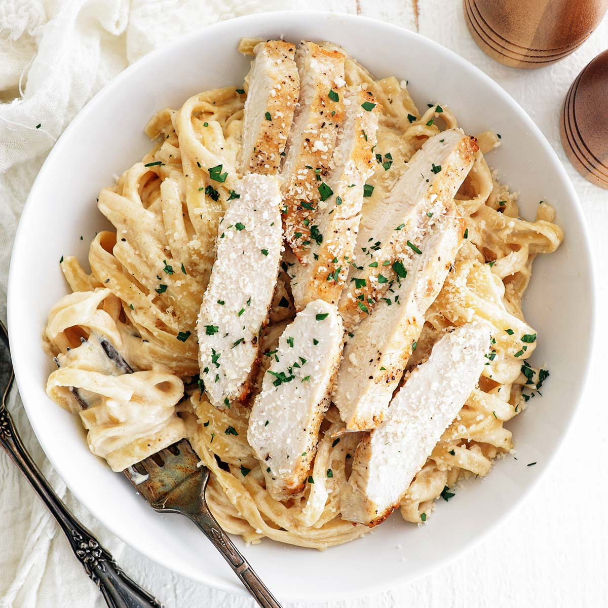

Home
Description

This classic chicken Alfredo recipe features tender, seasoned chicken breast slices served over creamy fettuccine pasta, smothered in a rich, velvety parmesan sauce. The dish is typically prepared in under 30 minutes by pan-searing chicken in butter, simmering garlic, heavy cream, and cheese, then combining it all with pasta, offering a comforting, restaurant-quality meal.
Ingredients
Instructions
1. Make the noodles: Bring a large pot of salted water to a boil. Add the fettuccine and cook until al dente according to package directions, usually 10 minutes. Reserve 1/2 cup of the cooking water, then drain well. Set aside.
2. Make the chicken: Season chicken breasts with the Italian seasoning, salt, and pepper.
3. Warm the olive oil over medium-high heat in a large nonstick skillet. Once it’s shimmering, swirl the pan to evenly distribute. Add the chicken and leave it undisturbed for 5-7 minutes, until the bottom is golden-brown. Flip over and add in 1 tablespoon of butter between them, picking up the pan to give it a gentle swirl to distribute. Continue cooking for another 5-7 minutes (or an internal temperature reaches 165 degrees F.)
4. Transfer the chicken to a cutting board and let rest for 3 minutes. Cut into 1/2-inch-thick slices. Tent with foil while you prepare the sauce.
5. Make the Alfredo sauce: In the same pan, over medium-low heat, add the butter and cream; whisk until butter has melted.
6. Add in the minced garlic, garlic powder, Italian seasoning, salt, and pepper; whisk until combined and smooth.
7. Bring to a gentle simmer (do not boil) and cook for 3-4 minutes, whisking constantly, until it starts to thicken.
8. Stir in the parmesan cheese just until melted and the sauce is smooth. (If the sauce ends up too thick, add some of the reserved pasta cooking water, a few tablespoons at a time, to thin it out.)
9. Assemble: Take sauce off the heat and immediately toss with the cooked fettuccine noodles.
10. Divide the pasta among serving bowls and top with a few slices of chicken. Garnish with parsley, more Parmesan, and black pepper if desired.